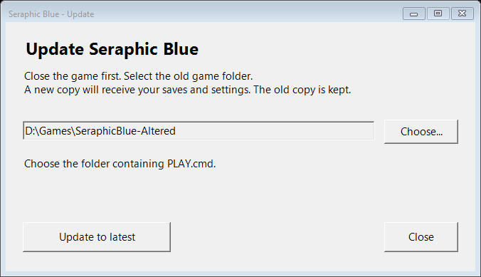

Version 1.0.0. Windows 10/11. No Python installation needed.
Keep Update.ps1 beside the updater program.

The updater creates a new game folder beside the old one. It downloads the same edition, verifies the release checksum and extracted files, then copies and verifies your saves and config.
The old game stays in place. A separate save/settings backup is kept. The new release keeps its own EasyRPG.ini.
If your copy already has the latest release, the updater says so and does not reinstall it.
This supports stable full-game releases with an intact fullgame-manifest.json and the standard launcher paths. Historical patch-only copies, modified databases and custom save/config locations use the manual update steps.
DC and Altered saves remain on their matching editions. Switching editions is not supported. A failed download, changed source save, mismatched edition, incomplete copy or existing destination stops the update. The old installation is not overwritten. A folder named .partial-... is unfinished; do not play it.
Keep the old folder, verified backup and download until the updated game loads your usual save. No automatic cleanup runs.
Linux and Steam Deck currently use the manual update steps. Physical Steam Deck and Proton are not tested by this Windows updater.